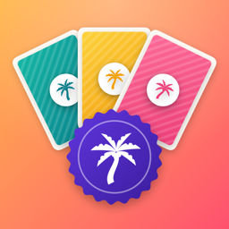

Palmier
Le jeu de soirée entre potes 🌴
The party card game for your crew 🌴
Assistance
Une question, un souci, une idée de défi ? Écris-nous, on répond en français ou en anglais.
thomasmuller2@gmail.comQuestions fréquentes
Comment on joue ?
Pose le téléphone au milieu de la bande. Chacun son tour, touche une carte du palmier ou tire-la vers toi, puis fais le défi. L'explication des mini-jeux est écrite sur la carte, et la dernière carte reste affichée en bas de l'écran.
C'est quoi une pénalité ?
Avant de commencer, mettez-vous d'accord sur ce que vaut une pénalité : un gage, une pompe, une imitation, une chanson… C'est vous qui fixez les règles.
C'est quoi le rituel des As ?
Les quatre As préparent un défi : le premier choisit l'endroit, le deuxième un accessoire, le troisième une action… et le quatrième relève le défi.
Comment créer mes propres défis ?
Depuis l'accueil, ouvre « Éditer mes cartes », choisis une carte et écris ton défi. Lance ensuite l'ambiance « Mes cartes ». Les cartes laissées vides reprennent les défis du Before.
Où sont enregistrés mes défis et ma partie ?
Sur ton iPhone, et dans ses sauvegardes iCloud ou ordinateur si tu les as activées. Le jeu n'a pas de compte en ligne : si tu supprimes l'app, tes défis personnalisés sont effacés.
Personne n'est obligé de relever un défi : jouez avec bienveillance.
Support
A question, a problem, an idea for a challenge? Write to us, we answer in French or English.
thomasmuller2@gmail.comFAQ
How do you play?
Put the phone in the middle of the group. Taking turns, tap a card in the palm tree or pull it towards you, then do the challenge. Mini-game rules are written on the card, and the last card stays on screen.
What is a penalty?
Before you start, agree on what a penalty is worth: a dare, a push-up, an impression, a song… You set the rules.
What is the Aces ritual?
The four Aces build a dare: the first picks the place, the second a prop, the third an action… and the fourth takes on the dare.
How do I write my own challenges?
From the home screen, open "Éditer mes cartes", pick a card and write your challenge. Then start the "Mes cartes" mode. Blank cards fall back to the Before challenges.
Where are my challenges and my game stored?
On your iPhone, and in its iCloud or computer backups if you use them. The game has no online account: deleting the app erases your custom challenges.
Nobody has to take on a dare: play kindly.